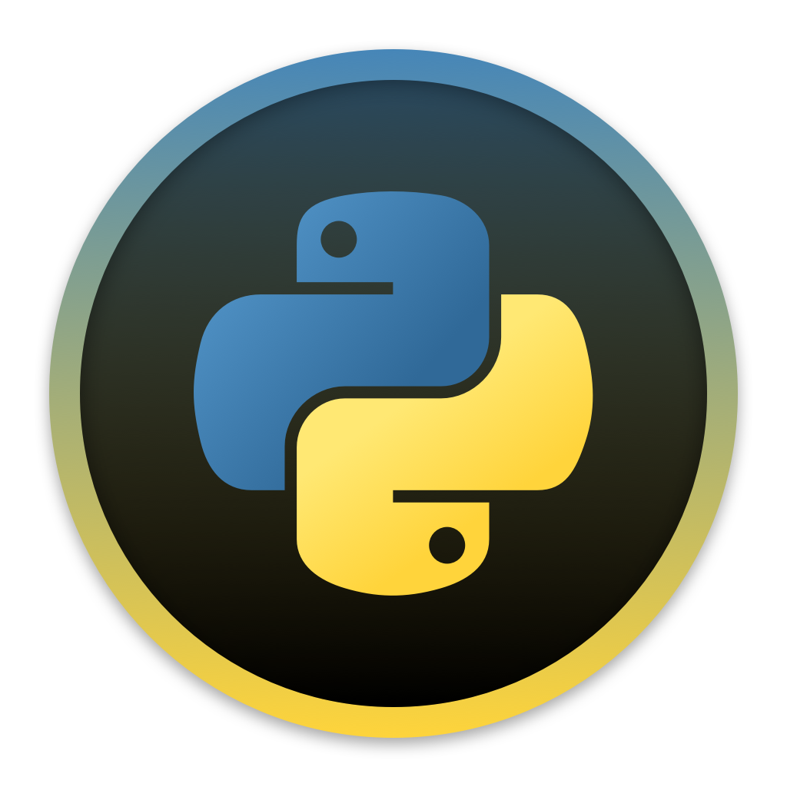
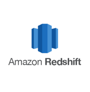
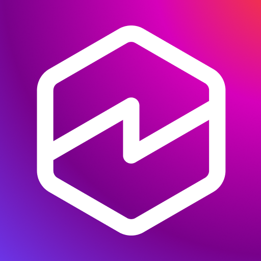

SELECT risk_bucket, COUNT(*) FROM enforcement_events GROUP BY risk_bucket ORDER BY COUNT(*) DESC;
WITH defects AS (SELECT * FROM qa_signals WHERE severity = 'critical') SELECT owner, AVG(score) FROM defects GROUP BY owner;
python audit_agent.py --source redshift --ocr cloudvision --mode enforcement_validation
df.groupby('region')['defect_rate'].rolling(7).mean().reset_index()
UPDATE quality_metrics SET trend = 'improving' WHERE detection_gain >= 0.30;
for batch in stream: anomalies.extend(model.detect(batch)); alert(anomalies)
Hello, I'm
Harikrishnan N
|
Trust & Safety Quality Analyst | Automation Architect |
SQL & Python Systems Builder
//
Strategic Positioning
Results-driven analyst with 5+ years of experience building risk detection frameworks,
audit automation platforms, and enforcement quality systems that operate at scale across
high-volume digital ecosystems. Proven ability to thrive in ambiguous, compliance-intensive
environments — delivering automated integrity solutions adopted by 250+ users globally
and processing millions of records with measurable gains in accuracy, efficiency, and risk coverage.
//
Quantified Impact
💻
0
VBA macros deployed as BAU tools
👥
0
employees using VBA automations
⏱
0
hours saved weekly from macro automation
🚀
0
Python applications running in production
🌐
0
global users across Python applications
📈
0
manual touchpoint reduction in audit workflows
✅
0
improvement in data reliability
🔍
0
increase in risk detection
//
Systems Built
01
Agent-Based Storefront Compliance Automation
Problem: Manual storefront audits were slow, inconsistent,
and prone to missed compliance gaps.
- Python-based agent navigation
- Playback simulation
- Screenshot capture
- Cloud OCR processing
- Automated MRN/CD validation
- Pass/fail detection logic
Impact: Eliminated repetitive manual audits and increased
signal reliability across compliance workflows.
02
Sampling & Enforcement Signal Optimization
Problem: Defect detection thresholds generated excessive
false positives and missed critical issues.
- SQL redesign of defect detection thresholds
- Historical defect pattern analysis
- False positive/false negative reduction
Impact: 30% improvement in critical issue detection while
reducing noise in enforcement pipelines.
03
Prime Video End-to-End Audit Orchestration Platform
Problem: Manual title auditing involved fragmented tools, high touchpoints, and long cycle times.
- Python + Flask + HTML platform with DynamoDB and Redshift data pipeline
- Title ingestion, smart allocation, prioritization, and queue engine
- Blind audit workflow and automated comparison engine
- Auto email alerts and automated title reassignment workflows
- CloudWatch metrics integration and live admin dashboarding
- Super-user controls to manage rule changes without code edits
Impact: Now used by 200+ employees globally, saves 18 analyst-hours per day,
and reduced manual touchpoints from 30+ to 3.
04
Dynamic Time & Motion Study Engine
Problem: Workflow teams lacked a dynamic way to measure step-level effort,
pinpoint bottlenecks, and set realistic weekly targets.
- In-app dynamic step builder to add and remove workflow steps
- Step-wise time capture and sequence tracking for each run
- Dynamic email routing to configured recipients per user/workflow
- Automatic AHT calculation and workflow-level rollups
- Bottleneck discovery with optimal vs achievable target modeling
Impact: Helped teams identify automation candidates faster,
standardize performance baselines, and set practical weekly output targets.
//
Capability Architecture
🛡
Trust & Safety Systems
- End-to-End Audit Workflow Architecture
- Blind Audit and Comparison Engine Design
- Queue, Allocation, and Prioritization Strategy
- Enforcement Validation and Compliance Controls
- Risk Detection Uplift Across High-Volume Pipelines
⚙
Data & Automation
- Python Flask Application Engineering
- DynamoDB to Redshift Data Write Pipelines
- VBA BAU Automation for Repetitive Operations
- Automated Reassignment and Notification Logic
- CloudWatch Metrics and Operational Monitoring
- Dynamic Time & Motion Instrumentation
💡
Decision Intelligence
- Live Admin Dashboards and Decision Support
- Root-Cause Analysis for Quality Escalations
- AHT Modeling and Workflow Bottleneck Detection
- Super-User Governance Without Code Changes
- Target Setting: Optimal vs Achievable Throughput
//
Tech Stack

Python
- Built 3 production audit applications
- Implemented comparison and routing engines
- Automated notifications and reassignments
- Enabled reliability-focused workflow automation
SQL
- Redesigned sampling and detection thresholds
- Performed defect and trend analysis at scale
- Built performance and AHT reporting queries
- Validated data quality across workflows

Amazon Redshift
- Final warehouse destination for audit outputs
- Historical analytics for quality leadership reviews
- Source layer for dashboards and insights
AWS
- Hosted and supported automation workflows
- Integrated CloudWatch operational metrics
- Maintained secure and scalable operations

QuickSight
- Built live admin and manager dashboards
- Enabled self-serve workflow visibility
- Tracked volumes, quality, and SLA trends
 Excel
Excel
- Built operational trackers and control sheets
- Performed reconciliations and ad hoc analysis
- Supported stakeholder-level reporting packs
VBA
- Developed 3 BAU macros for repetitive tasks
- Scaled usage across 50+ employees
- Saved around 10 hours each week